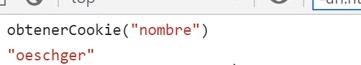
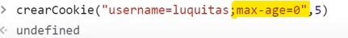

Las cookies en si se tratan de elementos con una estructura "nombre/valor/parametros", de la cual los unicos datos indispensables se tratan del nombre y el valor, en contraposición de los parametros los cuales son de caracter opcional.
Las cookies se declaran utilizando el objeto "Document" con el metodo ",cookies", seguido de la cadena "nombre/valor" que conformara la cookie, de la siguiete forma:
Codigo
De este modo las cookies son generadas y almacenadas en el navegador, para visualizarlas se emplea las "herramientas de desarrollador", espesificamente la pestaña de "Aplication" en la sección de "cookies" como se puede apreciar a continuación
Resultado
Nota: Cada una de las columnas que conforman la tabla en la que se visualizan las cookies correspnden a un atributo que puede ser asignado a estas.
Otro posible uso del metodo ".cookie" se aplica en los casos en los que este es declardo sin datos que registrar,de este modo el metodo permite obtener todas las cookies que se ecuentren almacenadas en el navegador.
Ejemplo
Nota: Tener presente el hecho de que al emplearse el metodo de esta forma, se añadira un ";" para separar cada una de las cookies.
Atributos
Una particularidad de las cookies se trata de que los atributos de estas no son trabajados desde el front-end, por lo tanto si bien si pueden ser declarados desde allí, una vez hecho esto no se podra manipular ninguna de estos, desde un lugar que no sea el back-end, por lo tanto, a los unicos datos de las cookies a los que se tiene pleno acceso desde el front-end se tratan del "name" y del "value".
Para declarar los atributos de una cookie se mantiene el formato de "nombre/valor", por lo tanto se iguala el respectibo nombre del atributo, al valor que poseera este, sin olvidar que cada atributo se debe separar con punto y coma, tal como se puede apreciar a continuación:
Ejemplo
De esta forma es como se observa una cookie, la cual para este ejemplo posee tres atributos basicos, los cuales son el "name", la "expiración" y la "ubicación(path)"
Nota: La sesión de las cookies de no ser declaradas estas se mantenen activas hasta que se cierre la sesión actual de la paguina.
Una caracteritica de las cookies radica en que estas tienen un limite de peso que pueden soportar, el cual es de 4kb, mientras que "sessionStorage" o "LocolStorage" poseen un limite de 5MB, sin embargo las cookies cuentan con la ventaja de que estas son mucho más rapido de ejecutar por el navegador.
Ejemplo de una función que obtiene el valor de una cookie
Como ya se menciono esta función permite obtener el valor del campo "value" de una cookie, es decir permite obtener valor vinculado al nombre de de cada registro, el flujo de esta función descrito a continuación seria:
-
Lo primero es utilizar el metodo "Document.cookie" para obtener todas las cookies declaradas hasta el mometo y se almacena en la variable cookies
Nota: Recordar que la forma en la que este metodo retorna las cookies es en la de una unica cadena de texto, con cada uno de los valores separados por punto y coma (:).
-
Luego se utiliza el metodo ".split" con el valor (;), metodo que permite porcionar una cadena de texto y retornar sus partes en un array, para determinar donde se separara la cadena de texto se utiliza el simbolo definido en este metodo.
Por lo tanto en este paso se utiliza el metodo ".split" para separar cada valor y almacenarlo en los campos del array, esto cada vez que se encuentre un (;)
-
Seguido a esto se utiliza un ciclo "for" para recorrer el array aplicando el metodo ".trim", el cual permite aliminar los caracteres de espacio en blanco (" ") que en ocaciones se pueden añadir a las secciones de las cadenas de texto en las que se aplica el metodo "split", ya que estos caracteres causarian errores en el codigo es necesario eliminarlos
-
Ya terminando se aplica un condicional "if" para determinar si el nombre de alguna de las cookies inicia con los mismos caracteres que los datos proveidos por el usuario, para esto se usa el metodo ".startWith"
-
Una vez se han obtenido todas las cookies y se han almacenado adecuadamete, así como tambien se ha validado que estas coinsidan con el los datos ingresados por el usario se obtien el valor de la cookie,
Ya que en este punto lasa cookies estan conformadas por cadenas de texto "nombre = valor", se procede a aplicar por segunda vez el metodo ".split", pero esta vez se define el simbolo "=", y se define el segundo indice del array,
En otras palabras lo que ocurre es que al aplicar el metodo ".split" en las cadenas "nombre = valor" el valor es almacenado en el segundo indice del array, el cual es llamado al indicar "[1]", con el fin de ser retornado por la función.
Modificar una Cookie
Realmente las cookies en si no son modificadas, en su lugar son re-escritas o declaradas nuevamente, por lo tanto lo unico necesario para modificar el valor de la cookie es declararla pero con el nuevo valor luego del simbolo "=".
Original

Modificación
Final
Eliminar Una Cookie Desde el Frontent
Como se ha mencionado anteriormente los atributos de las cookies no se pueden modificar desde el front-end, sin embargo existen una manera de aliminar las cookies desde este.
Este truco realmente es my simple, se basa en declarar la cookie como si se desease modificarla, pero en este caso lo que se hara es: luego de la cadena "nombre = valor" se añade un punto y coma (;) seguido a este se ingresa "max-age = 0", es decir el tiempo de vigencia de la cookie.
De este modo al aplicarse la modificación se interpreta el nuevo valor del atributo "max-age", el cual al estar definido en cero "0" resuata en que la cookie en cuestión se elimine debido a que se considera expirada.
Original
Modificación

Nota: Ya que una de las aplicaciones de las cookies redica en recopilar datos del usuario la tematica de la privacidad es muy relevante en estas, por ello, en caso de necesitar desarrollar o aplicar una de estas cookies los más recomendable es investigar sobre el cumplimiento del "RGPD y las leyes de privacidad"